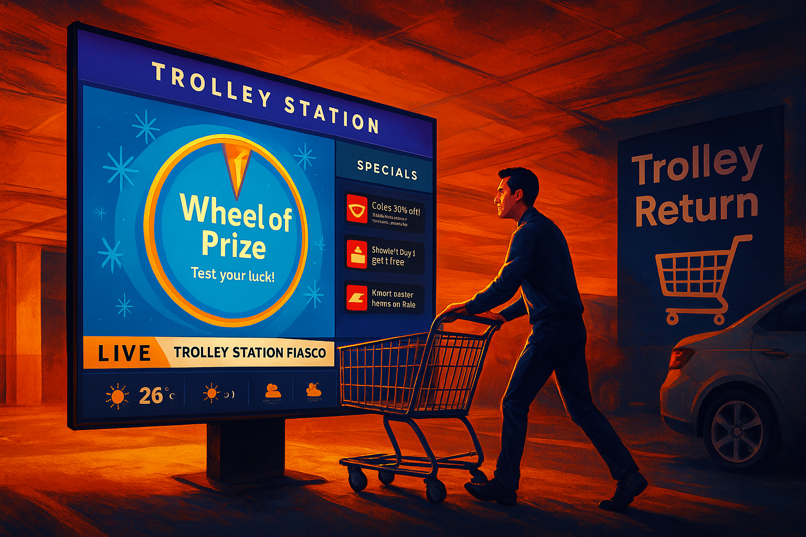

01
Understand
In-depth interviews, surveys, and testing to ground every decision in real evidence.



Technology,
made invisible.
I’m Frank — I turn research and complexity into products that feel calm, obvious, and quietly inevitable. Move your cursor to look in; scroll to step inside the work.
Selected work
A flagship professional series and three case studies. Scroll to move sideways through them →
How I work
In-depth interviews, surveys, and testing to ground every decision in real evidence.
Interactive prototypes and design systems that turn complexity into something effortless.
Polishing interaction, accessibility, and craft until the experience disappears into use.